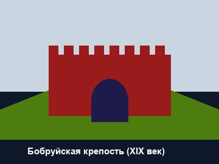
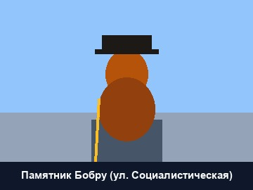

Вернуться на главную страницу «Города Беларуси: Бобруйск»
Достопримечательности и памятные места БобруйскаКультурно-исторические памятники, архитектура и знаковые объекты города |
| ← На главную страницу сайта | Районы города | Исторические вехи | Мультимедиа | Карточка разработчика |
| Наименование объекта | Период создания | Историко-культурное описание | Изображение |
|---|---|---|---|
| Бобруйская крепость | 1810–1836 гг. | Выдающийся памятник оборонительного зодчества первой половины XIX века. Во время Отечественной войны 1812 года гарнизон крепости сковал 20-тысячный корпус генерала Домбровского, удерживая блокаду на протяжении четырех месяцев. |
 |
| Памятник Бобру | 2006 год | Бронзовая скульптура авторства Владимира Гавриленко высотой 1,7 метра. Изображает добродушного импозантного бобра в сюртуке и шляпе начала XX века. Памятник стал всенародным символом и популярным туристическим объектом. |
 |
| Свято-Никольский собор | 1892–1894 гг. | Кафедральный православный собор города в русско-византийском стиле. Памятник архитектуры конца XIX века с величественным пятиглавием и колокольней. |
Архитектурные жемчужины города Бобруйска Памятники охраняются государством |
| Дом купчихи Кацнельсон | 1912 год | Уникальный для Беларуси памятник деревянного зодчества эпохи модерна. Одноэтажный особняк с мезонином и башенками на улице Интернациональной. | |
| Всего в Бобруйске насчитывается свыше 180 учтенных историко-культурных ценностей республиканского и регионального значения. | |||
Вернуться на главную страницу «Города Беларуси: Бобруйск»
| © 2026 Разработчик: Лабынцев Денис Янушевич, студент группы РС02-23, специальность «Программист». |